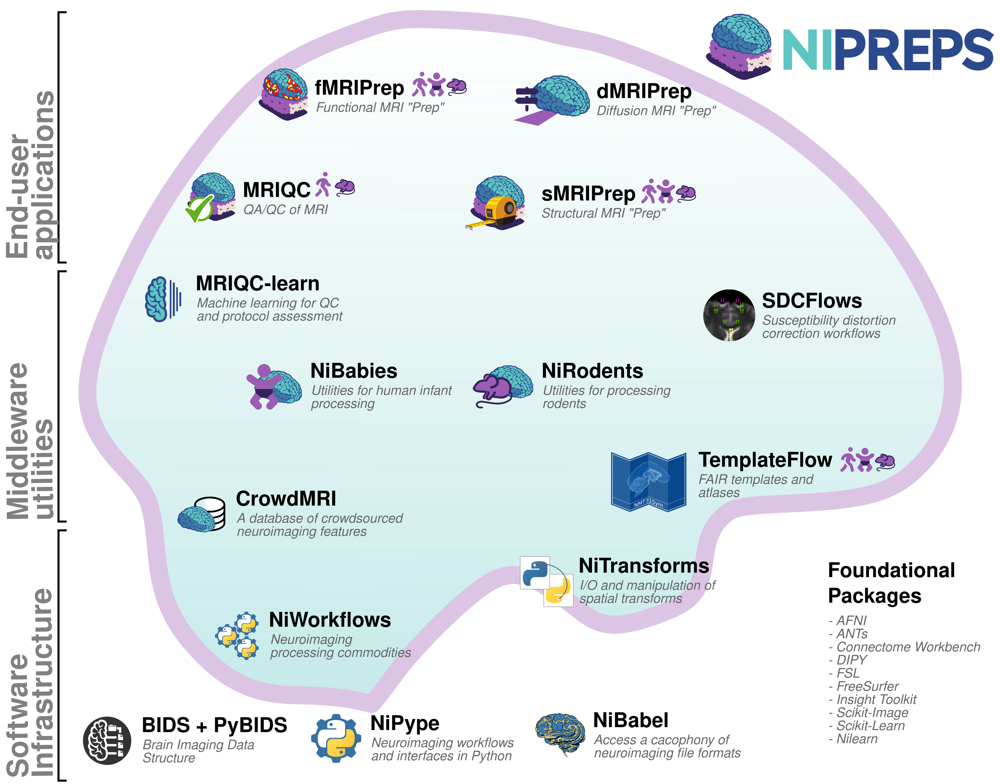

Framework ¶
Building on fMRIPrep 's success story ¶
The current neuroimaging workflow has matured into a large chain of processing and analysis steps involving a large number of experts, across imaging modalities and applications. The development and fast adoption of fMRIPrep have revealed that neuroscientists need tools that simplify their research workflow, provide visual reports and checkpoints, and engender trust in the tool itself. The NiPreps framework extends fMRIPrep 's approach and principles to new imaging modalities. The vision for NiPreps is to provide end-users (i.e., researchers) with applications that allow them to perform quality control smoothly and to prepare their data for modeling and statistical analysis.
Leveraging BIDS ¶
NiPreps leverage the Brain Imaging Data Structure (BIDS) to understand all the particular features and available metadata (i.e., imaging parameters) of the input dataset. BIDS allows NiPreps to automatically stage the most adequate preprocessing workflow while minimizing manual intervention.
Architecture ¶
The NiPreps framework (Figure 1) encompasses a wide array of software projects organized into three layers of scientific software:
- Software infrastructure : including quite mature projects such as NiPype and NiBabel ; the standard specifications of the Brain Imaging Data Structure (BIDS, and BIDS-Derivatives); and some other tools such as NiTransforms or TemplateFlow , under development. These tools deliver low-level interfaces (e.g., data access to images and spatial transforms) and utilities (see Figure 1).
- Middleware : these are utilities that generalize their functionalities across the end-user tools. These utilities cover foundational processing methodologies (e.g., NiWorkflows and SDCflows ), the crowdsourcing of metadata (e.g., MRIQC Web-API ), and the support for deep learning models ( MRIQC-nets ).
- End-user tools such as fMRIPrep : Some existing end-user tools include sMRIPrep (Structural MRI Preprocessing) , which lies in between an end-user tool and middleware, as it is involved in higher-level tools such as fMRIPrep . Finally, quality control tools (e.g., MRIQC ) to be executed before any preprocessing happens.

Projects ¶
- fMRIPrep ( GitHub ): fMRI Preprocessing
- dMRIPrep ( GitHub ): dMRI Preprocessing
- sMRIPrep ( GitHub ): Structural MRI Preprocessing
- MRIQC ( GitHub ): MRI quality control
- SDCflows ( GitHub ): Susceptibility-derived distortion correction (SDC) workflows
- NiWorkflows ( GitHub ): General/miscellaneous workflow utilities
- TemplateFlow : A registry of neuroimaging templates and spatial mappings between them.
- NiTransforms ( GitHub )